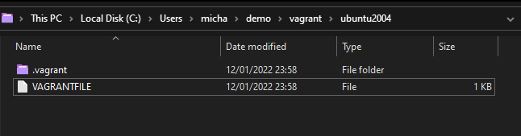
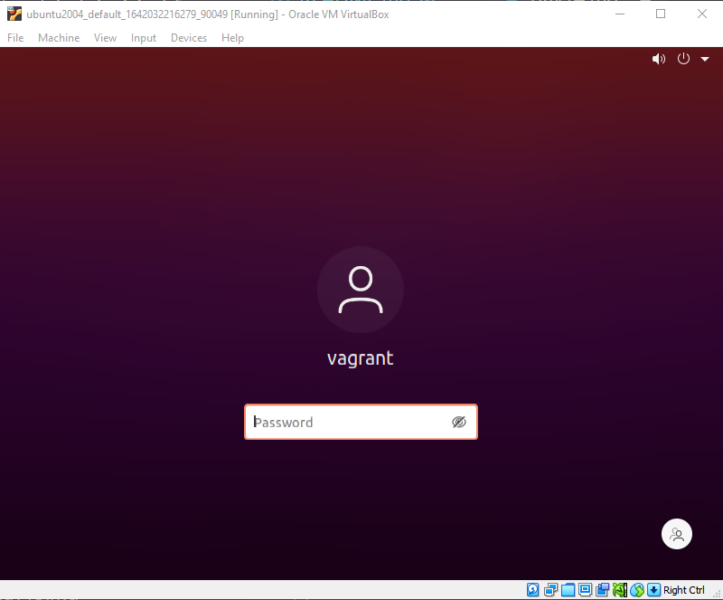

Hướng dẫn sử dụng Vagrant và WSL
Tùy thuộc vào nhu cầu và mục đích sử dụng của bạn mà bạn nên chọn WSL hay Vagrant. Trong chủ đề này chúng ta sẽ thực hiện dựa trên Vagrant
-
WSL là một tính năng của Windows cho phép bạn chạy các ứng dụng Linux trên máy tính chạy Windows. WSL là một cách tuyệt vời để sử dụng các công cụ và ứng dụng Linux từ Windows, nhưng nó không phải là một máy ảo. Điều này có nghĩa là các ứng dụng WSL không thể truy cập các tài nguyên vật lý của máy tính Windows, chẳng hạn như đĩa, bộ nhớ và mạng.
-
Vagrant là một công cụ tạo và quản lý máy ảo. Vagrant có thể được sử dụng để tạo máy ảo chạy bất kỳ hệ điều hành nào, bao gồm Linux, Windows và macOS. Các máy ảo Vagrant có thể truy cập các tài nguyên vật lý của máy tính Windows, điều này làm cho chúng trở nên linh hoạt hơn WSL.
Bắt đầu
Tôi không khuyến nghị bạn làm giống như tôi vì có nhiều tùy chọn dễ dàng hơn nhưng tôi sẽ nói rằng việc thực hiện điều đó buộc bạn phải học nhanh hơn cách làm cho mọi thứ hoạt động trên Linux.
Trong phần lớn thời gian qua, tôi đã triển khai máy ảo (Virtual Machine) sử dụng Virtual Box trên máy Windows của mình. Tôi cũng sẽ triển khai một bản phân phối Linux (Linux distro), trong khi phần lớn các máy chủ Linux mà bạn sẽ quản lý có thể sẽ là các máy chủ không có GUI và mọi thứ đều dựa trên shell. Tuy nhiên, như tôi đã nói ở phần đầu, rất nhiều các công cụ mà chúng ta đã đề cập trong suốt thời gian làm việc bắt đầu chạy trên Linux. Do đó, tôi cũng khuyến khích bạn tham gia vào việc sử dụng Linux với máy tính của bạn để có cùng một trải nghiệm học tập với tôi.
Đối với phần còn lại của bài này, chúng ta sẽ tập trung vào việc thiết lập và chạy một máy ảo Ubuntu Desktop trong Virtual Box. Đầu tiên, hãy tải xuống Virtual Box và download Ubuntu ISO bản mới nhất và tiếp tục hoàn thiện môi trường của của chúng ta. Nó không được coi là DevOps đúng không?
Một lý do tốt khác để sử dụng hầu hết các bản phân phối Linux là chúng miễn phí và là phần mềm mã nguồn mở. Chúng ta cũng đang chọn Ubuntu vì nó có lẽ là bản phân phối được sử dụng rộng rãi nhất được triển khai bỏ qua các thiết bị di động và máy chủ RedHat Enterprise dành cho doanh nghiệp. Tôi có thể sai nhưng với CentOS, tôi nghĩ rằng Ubuntu có một vị trí cao trong danh sách và nó cực kỳ đơn giản.
Giới thiệu HashiCorp Vagrant
Vagrant là một tiện ích CLI quản lý vòng đời của các máy ảo của bạn. Chúng ta có thể sử dụng vagrant để khởi động và tắt các máy ảo trên nhiều nền tảng khác nhau bao gồm vSphere, Hyper-v, Virtual Box và cả Docker. Sẽ có nhiều các nhà cung cấp khác nhưng chúng ta sẽ tiếp tục với Virtual Box.
Điều đầu tiên chúng ta cần làm là cài đặt Vagrant trên máy của bạn, khi truy cập trang tải xuống, bạn sẽ thấy tất cả các hệ điều hành được liệt kê để bạn lựa chọn tại trang download của HashiCorp Vagrant. Tôi đang sử dụng Windows nên đã download tệp nhị phân cho hệ thống của mình và cài đặt tệp này lên hệ thống của mình.
Tiếp theo, chúng ta cũng cần cài đặt Virtual Box. Một lần nữa, phần mềm này cũng có thể được cài đặt trên nhiều hệ điều hành khác nhau và một lý do chính đáng để chọn 2 công nghệ này là vì chúng ta có thể sử dụng trên hầu hết tất cả các hệ điều hành.
Cả hai đều khá dễ đề cài đặt và đều có những cộng đồng tuyệt vời xung quanh chúng, vì vậy hãy liên hệ nếu bạn gặp vấn đề.
VAGRANTFILE đầu tiên
VAGRANTFILE mô tả loại máy chúng ta muốn triển khai. Nó cũng định nghĩa cấu hình và khởi tạo máy này.
Khi nói đến việc lưu các tệp này và sắp xếp các VAGRANTFILE của bạn, tôi có xu hướng đặt chúng vào các thư mục của chúng trong không gian làm việc của mình. Bạn có thể thấy bên dưới giao diện này trên hệ thống của tôi. Hy vọng rằng bạn cũng sẽ thử sử dụng Vagrant và thấy sự dễ dàng khi muốn thay đổi hệ thống, rồi cuối cùng bạn sẽ nghiện vọc vạch các bản distro khác nhau của Linux cho Máy tính để bàn Linux.

Hãy cùng nhìn lại VAGRANTFILE đó và xem những gì chúng ta đang xây dựng.
Vagrant.configure("2") do |config|
config.vm.box = "chenhan/ubuntu-desktop-20.04"
config.vm.provider :virtualbox do |v|
v.memory = 8096
v.cpus = 4
v.customize ["modifyvm", :id, "--vram", "128"]
end
end
Đây là một VAGRANTFILE đơn giản. Chúng ta muốn nói rằng chúng ta muốn có một box cụ thể, một box có thể là hình ảnh công khai hoặc bản dựng riêng của hệ thống mà bạn đang tìm kiếm. Bạn có thể tìm thấy một danh sách dài các box công khai có sẵn tại đây trong danh mục công khai của Vagrant box
Dòng tiếp theo, chúng ta nói rằng chúng ta muốn sử dụng một nhà cung cấp cụ thể và trong trường hợp này là VirtualBox. Chúng ta cũng muốn bộ nhớ của máy là 8GB và số lượng CPU là 4. Theo kinh nghiệm của tôi, bạn có thể sẽ phải thêm dòng sau nếu bạn gặp sự cố hiển thị. Tôi sẽ tăng bộ nhớ này lên đến 128MB nhưng nó hoàn toàn phụ thuộc vào cấu hình hệ thống của bạn.
v.customize ["modifyvm", :id, "--vram", ""]
Tôi cũng đã đặt một bản sao của tệp vagrant cụ thể này trong thư mục Scripts
Tạo Linux Desktop
Bây giờ chúng ta đã sẵn sàng để khởi động và chạy máy tính của mình trong terminal của máy trạm. Tôi đang sử dụng PowerShell trên máy Windows của mình. Điều hướng đến thư mục dự án và là nơi ta đặt VAGRANTFILE. Bạn có thể nhập lệnh vagrant up và nếu mọi thứ diễn ra bình thường, bạn sẽ thấy một cái gì đó như thế này.

Một điều nữa cần bổ sung ở đây là network sẽ được đặt thành NAT trên máy ảo của bạn. Ở giai đoạn này, chúng ta không cần biết về NAT và tôi dự định sẽ nói về nó sâu hơn khi trong phần Network. Hãy coi rằng đây là cài đặt đơn giản để đưa máy ảo vào mạng của bạn, đây cũng là chế độ kết nối mạng mặc định trên Virtual Box. Bạn có thể tìm hiểu thêm trong Virtual Box documentation
Sau khi hoàn tất quá trình vagrant up, chúng ta có thể sử dụng vagrant ssh để truy cập vào terminal của máy ảo mới của mình.

Đây là nơi chúng ta sẽ khám phá trong vài ngày tới. Tôi cũng muốn đi sâu vào một số tùy biến cho máy trạm dành cho nhà phát triển của bạn mà tôi cũng đã làm và nó giúp cuộc sống của bạn đơn giản hơn nhiều khi sử dụng nó hàng ngày và tất nhiên, bạn có thực sự thích DevOps khi bạn sử dụng một terminal tiêu chuẩn và không cool ngầu?
Để xác nhận trong Virtual Box, bạn sẽ thấy lời nhắc đăng nhập khi bạn chọn máy ảo của mình.

Nếu bạn đã đi được đến đây và đang tự hỏi "TÊN NGƯỜI DÙNG & MẬT KHẨU LÀ GÌ?"
- Username = vagrant
- Password = vagrant
Windows Subsystem for Linux (WSL) là gì ?
Windows Subsystem for Linux (WSL) là một tính năng của Windows cho phép bạn chạy các ứng dụng Linux trên máy tính Windows của mình. WSL được thiết kế để chạy trên Windows 10 và Windows 11.
WSL 2 là phiên bản mới nhất của Windows Subsystem for Linux, cho phép bạn chạy các ứng dụng Linux trên Windows 10 và Windows 11. WSL 2 được xây dựng dựa trên Hyper-V, cung cấp khả năng tương thích tốt hơn với các ứng dụng Linux và hiệu suất cao hơn. Có nhiều bản phân phối Linux khác nhau có sẵn cho WSL, bao gồm Ubuntu, Debian, và Fedora.
Bạn có thể cài đặt WSL từ Microsoft Store hoặc bằng cách sử dụng lệnh wsl --install trong Windows PowerShell hoặc Command Prompt. Để cài đặt WSL 2, hãy làm theo các bước sau:
-
Mở Windows PowerShell với tư cách quản trị viên.
-
Chạy lệnh sau:
wsl --install
-
Windows sẽ cài đặt WSL 2 và một bản phân phối Linux mới.
-
Sau khi cài đặt xong, bạn có thể mở bản phân phối Linux bằng cách chạy lệnh sau:
wsl -d
Ví dụ: để mở bản phân phối Ubuntu, hãy chạy lệnh sau:
wsl -d Ubuntu
Bạn cũng có thể mở bản phân phối Linux từ menu Start.
Sau khi bạn đã khởi động bản phân phối Linux, bạn có thể bắt đầu sử dụng nó giống như bất kỳ bản phân phối Linux nào khác. Bạn có thể chạy các lệnh, cài đặt các gói và sử dụng các ứng dụng.
Trong bài tiếp theo chúng ta sẽ tìm hiểu về một số lệnh và tác dụng của chúng, Terminal sẽ là nơi để biến mọi thứ thành hiện thực.
Tài liệu tham khảo
- Learn the Linux Fundamentals - Part 1
- Linux for hackers (don't worry you don't need to be a hacker!)
- https://github.com/MichaelCade/90DaysOfDevOps/blob/main/2022/vi/Days/day14.md
- https://docs.microsoft.com/en-us/windows/wsl/install-win10
- https://www.vagrantup.com/